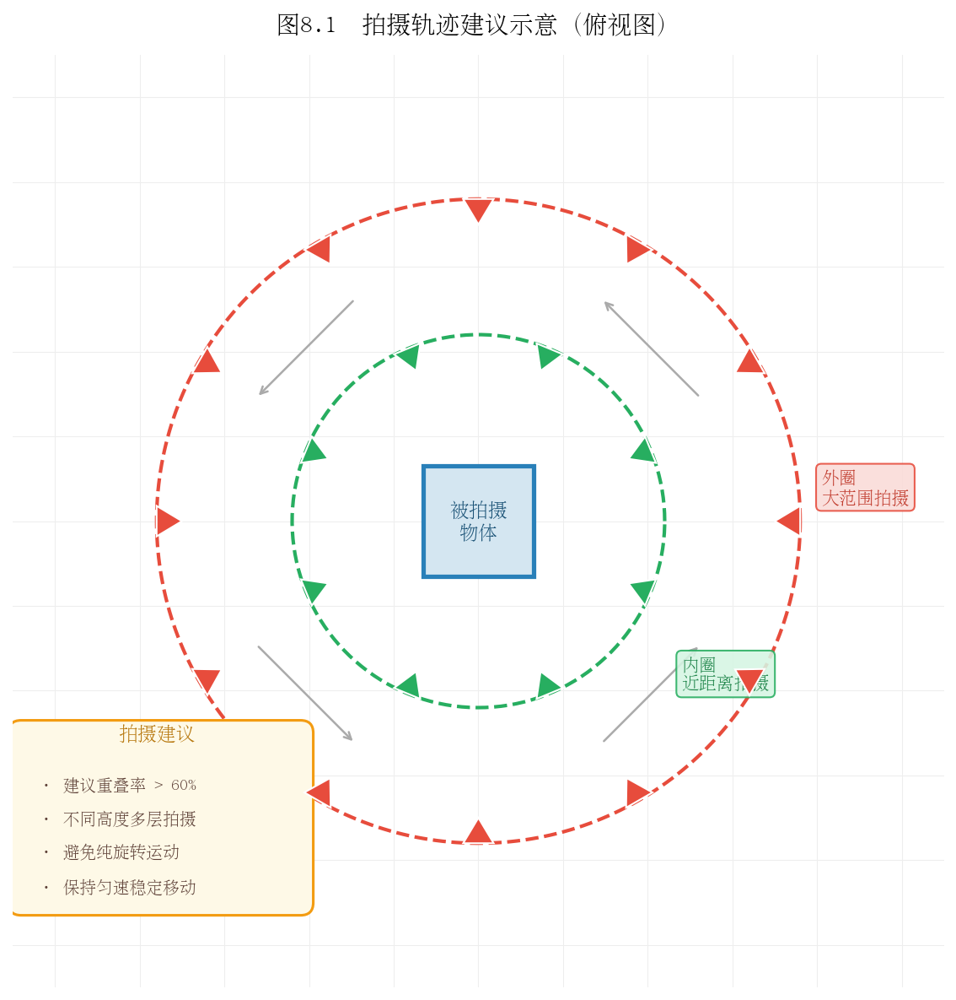

第八章：数据准备与训练实战
理论到实践的最后一跳：从自己的视频或公开数据集，到一个可实时渲染的3DGS场景。
8.1 硬件与环境配置
GPU 显存需求
3DGS 训练是显存密集型任务，主要消耗来自：高斯基元参数存储、中间渲染结果缓存、梯度缓冲区。
| 场景规模 | 建议显存 | 典型高斯数量 | 推荐GPU |
|---|---|---|---|
| 小场景/物体 | 8 GB | <100万 | RTX 3070/4060 Ti |
| 中等室内 | 16 GB | 100-300万 | RTX 3080/4070 Ti |
| 复杂室外 | 24 GB | 300-600万 | RTX 3090/4090 |
| 大场景 | 48 GB+ | >600万 | A6000/H100 |
显存不足时的降级策略（按效果损失排序）：
- 降低图像分辨率：`--resolution 2`（1/4图像像素，最推荐）
- 降低球谐阶数：`--sh_degree 1`（降低颜色质量但减少参数）
- 限制高斯上限：`--max_num_splats 1500000`
- 减小densify频率：`--densification_interval 300`
CUDA 与依赖版本
3DGS 对版本有严格要求：
| 组件 | 推荐版本 | 说明 |
|---|---|---|
| CUDA | 11.8 或 12.1 | 避免使用12.3+（部分编译问题） |
| PyTorch | 2.0.x / 2.1.x | 与CUDA版本匹配 |
| Python | 3.8 - 3.10 | 避免3.11+（部分依赖兼容性） |
| GCC | 9 - 11 | CUDA扩展编译需要 |
推荐安装流程（conda）：
```bash conda create -n gs python=3.10 -y conda activate gs # 安装匹配CUDA版本的PyTorch pip install torch torchvision --index-url https://download.pytorch.org/whl/cu118 # 克隆仓库并安装依赖 git clone https://github.com/graphdeco-inria/gaussian-splatting --recursive cd gaussian-splatting pip install -r requirements.txt # 编译CUDA扩展（这一步最容易出错） pip install submodules/diff-gaussian-rasterization pip install submodules/simple-knn ```
验证安装：
```bash python -c "import diff_gaussian_rasterization; print('CUDA扩展安装成功')" ```
Docker 快速启动（推荐）：
```bash docker pull nerfstudio/nerfstudio:latest # 或使用 gsplat 的官方镜像 docker run --gpus all -v /your/data:/data nerfstudio/nerfstudio ```
思考题：为什么 3DGS 的 CUDA 扩展需要本地编译，而不能直接 `pip install gaussian-splatting`？编译过程依赖了哪些本机环境信息？
8.2 公开数据集下载与使用
Tanks and Temples
经典室外重建基准数据集，包含12个真实室内外场景。
下载：
```bash # 官方下载（需注册） wget https://storage.googleapis.com/tanks-and-temples/TanksAndTemples.zip ```
场景列表：Truck、Train（室外）；Barn、Caterpillar、Ignatius（室外大场景）；Family（室内）等。
特点： 场景复杂，有植被、金属、玻璃，覆盖各种材质挑战；是论文对比中最常用的基准。
Mip-NeRF 360 数据集
9个场景（5个室外、4个室内），每个场景包含数百张图像，相机绕场景360度环绕。
下载：
```bash # 室外场景（garden, bicycle, bonsai等） wget http://storage.googleapis.com/gresearch/refraw360/360_v2.zip # 室内场景（room, kitchen, counter等） wget http://storage.googleapis.com/gresearch/refraw360/360_extra_scenes.zip ```
特点： 360度环绕拍摄，测试无界场景重建能力；室内/室外差异大，是最全面的NVS基准。
数据集对比

| 数据集 | 场景类型 | 图像数量 | 分辨率 | 主要用途 |
|---|---|---|---|---|
| Tanks & Temples | 室内外混合 | 150-400 | 1920×1080 | 重建质量评估 |
| Mip-NeRF 360 | 室内+室外 | 100-300 | 1280×720 | NVS全面评估 |
| Deep Blending | 室内 | 50-100 | 1920×1080 | 复杂光照测试 |
| DTU | 物体级别 | 49/64 | 1600×1200 | 精确几何评估 |
| KITTI-360 | 城市街道 | 数万 | 1408×376 | 自动驾驶场景 |
思考题：Mip-NeRF 360数据集要求相机360度环绕拍摄。如果只有半圆弧的拍摄角度，另一半没有训练图像，3DGS会如何处理这种"未观测区域"？
8.3 用自己的视频训练
拍摄技巧
好的输入数据是高质量重建的前提。以下是关键拍摄原则：

必须做的： - 重叠率 >60%：相邻帧之间至少60%的内容相同，确保SfM能找到足够匹配点 - 多角度覆盖：从不同高度和角度拍摄，避免只有单一水平环绕 - 慢速移动：保持摄像头稳定，避免运动模糊 - 固定曝光：关闭自动曝光，防止不同帧亮度差异大
不要做的： - 纯旋转（只转不移）：SfM无法准确估计相机位移 - 急速晃动：导致模糊帧 - 在场景中走动（训练期间）：训练图像中出现人物会导致"幽灵" - 拍摄纯色区域（白墙、天花板）：COLMAP无法在这些区域找到特征点
视频抽帧
```bash # 用ffmpeg按帧率抽帧（每秒2帧） ffmpeg -i input_video.mp4 -vf fps=2 images/%04d.jpg # 如果视频较短，可以抽全帧 ffmpeg -i input_video.mp4 images/%04d.jpg # 检查图像数量 ls images/ | wc -l ```
建议图像数量：100-500张（太少覆盖不足，太多COLMAP很慢）
COLMAP 自动重建流程
```bash # 自动模式（推荐，GPU加速） colmap automatic_reconstructor \ --workspace_path ./colmap_workspace \ --image_path ./images \ --camera_model OPENCV \ --use_gpu 1 \ --quality high # 将结果转换为3DGS期望的格式 cp -r colmap_workspace/sparse ./sparse ```
检查重建质量：
```bash # 查看注册图像数量和重投影误差 colmap model_analyzer --input_path sparse/0 ```
输出示例： ``` Cameras: 156 Images: 156 (registered: 153) ← 注册率 98%，很好 Points: 28456 Mean reprojection error: 0.891 px ← <1.5px，很好 ```
如果注册率 < 80% 或重投影误差 > 2px，建议重新拍摄。
思考题：COLMAP 的全自动重建会根据图像数量自动选择特征提取算法（SIFT vs 深度学习特征）。对于光线较暗的室内场景，SIFT 的效果如何？有什么替代方案？
8.4 训练参数精调
不同场景的推荐配置
室内场景（房间、实验室）：
```bash python train.py \ -s data/room \ --model_path output/room \ --iterations 30000 \ --densify_until_iter 15000 \ --densify_grad_threshold 0.0002 ```
室外场景（建筑、庭院）：
```bash python train.py \ -s data/garden \ --model_path output/garden \ --iterations 30000 \ --white_background \ # 室外建议白色背景 --densify_until_iter 15000 ```
小物体（产品、文物）：
```bash python train.py \ -s data/object \ --model_path output/object \ --iterations 30000 \ --sh_degree 3 \ --densify_grad_threshold 0.0001 # 更激进的密度控制 ```
快速实验策略
迭代优化时，先用7000步快速验证：
```bash # 快速验证（约5-10分钟） python train.py -s data/scene --iterations 7000 --model_path output/quick_test # 快速查看效果 python render.py -m output/quick_test --skip_train python metrics.py -m output/quick_test ```
7000步时PSNR通常已达到最终结果的90%，可以快速判断数据质量和参数是否合适。
关键超参数影响
| 参数 | 默认值 | 增大效果 | 减小效果 |
|---|---|---|---|
| `densify_grad_threshold` | 0.0002 | 高斯数量减少（欠拟合） | 高斯数量增多（可能过拟合） |
| `opacity_cull_threshold` | 0.005 | 更激进剪枝（高斯数少） | 保留更多"虚弱"高斯 |
| `position_lr_init` | 0.00016 | 高斯移动更快（不稳定） | 移动更慢（收敛慢） |
| `lambda_dssim` | 0.2 | 更注重结构（可能不稳定） | 更注重像素精度 |
思考题：`densify_until_iter=15000` 的意思是15000步之后不再做ADC（只做剪枝）。为什么不一直做ADC到训练结束？
8.5 可视化与结果分析
SIBR Viewer 实时查看
SIBR (Simple Image-Based Renderer) 是官方提供的实时渲染查看器。
```bash # 安装 cd SIBR_viewers cmake . -DCMAKE_BUILD_TYPE=Release make -j8 # 运行 ./SIBR_gaussianViewer_app -m output/room/ ```
操作方式：鼠标左键拖动视角，滚轮缩放，右键平移。
如果没有SIBR，可以用三方可视化工具：
- SuperSplat（网页版）：supersplat.app — 直接拖入 `.ply` 文件在线查看
- Polycam：支持 Gaussian Splatting 文件查看
- Unity/Unreal：有3DGS插件可直接导入渲染
Python 轨迹渲染
如果想生成一段"飞行穿越"视频，可以定义相机轨迹并逐帧渲染：
```python # 定义圆形环绕轨迹，然后渲染每帧 from scene.cameras import Camera import numpy as np # 生成环绕轨迹 thetas = np.linspace(0, 2*np.pi, 120) # 120帧 for i, theta in enumerate(thetas): R = rotation_matrix_from_angle(theta) t = [np.cos(theta)*2, 0, np.sin(theta)*2] cam = Camera(R=R, t=t, FoVx=fov, ...) img = render(cam, gaussians, ...)["render"] save_image(img, f"frames/{i:04d}.png") # 合成视频 os.system("ffmpeg -r 24 -i frames/%04d.png output.mp4") ```
训练指标监控
在训练时加入 Wandb 记录（需安装 `pip install wandb`）：
```python # train.py 中已有 TensorBoard 支持，可通过以下命令查看 tensorboard --logdir output/room/ ```


思考题：训练完成后，你发现场景中某个区域（比如窗帘）效果很差，高斯基元分布稀疏。不重新训练，有什么方法可以改善这个区域的质量？（提示：局部优化、添加更多该区域的训练图像）
8.6 导出与部署
PLY 文件格式
训练输出是一个 `.ply` 文件，包含所有高斯基元的参数。PLY是一种简单的3D点云格式，原版 `.ply` 文件中每个点包含 59 个属性（位置、旋转、缩放、不透明度、球谐系数）。
PLY 文件结构（头部示例）：
``` ply format binary_little_endian 1.0 element vertex 3245678 ← 高斯数量 property float x property float y property float z property float nx ... property float f_dc_0 ← 球谐系数（直流分量） property float f_dc_1 ... property float f_rest_0 ← 高阶球谐系数 ... property float opacity ← 不透明度（logit空间） property float scale_0 ← 缩放（log空间） ... property float rot_0 ← 旋转四元数 ... end_header ```
WebGL / 浏览器端部署
SuperSplat 和 3DGS.live 等工具支持将 `.ply` 转换为网页可用格式：
- 在 SuperSplat 中打开 `.ply` 文件，并优化（压缩、剔除）
- 导出为 `.splat` 格式（更紧凑的自定义格式）
- 嵌入网页（使用 three.js + gaussian-splatting-three 库）
```html ```
移动端适配
移动端（iOS/Android）性能有限，建议：
- 压缩高斯数量：使用 LightGaussian 或 Mini-Splatting 将高斯从300万压缩到50万以内
- 降低球谐阶数：从3阶降到1阶，参数量减少75%
- 使用移动端专用渲染器：Luma AI 的 iOS SDK，或 GSPLAT.js 的移动端优化版本
gsplat 库的 Python API
gsplat 是 Nerfstudio 团队开发的3DGS高性能后端，API更简洁，适合自定义开发：
```python from gsplat import rasterization # 核心API：将高斯基元光栅化为图像 renders, alphas, info = rasterization( means=gaussians_xyz, # [N, 3] 高斯位置 quats=gaussians_quats, # [N, 4] 旋转四元数 scales=gaussians_scales, # [N, 3] 缩放 opacities=gaussians_opacities, # [N] colors=gaussians_colors, # [N, C] viewmats=viewmats, # [B, 4, 4] Ks=Ks, # [B, 3, 3] width=W, height=H, ) ```
思考题：将3DGS部署到网页端时，`.ply` 文件通常需要通过网络下载（可能数百MB），用户体验差。有哪些技术手段可以实现"边下载边渲染"的流式加载？
本章小结
- 硬件：24GB显存（RTX 4090）可处理大多数场景；显存不足时优先降分辨率
- 公开数据集：Mip-NeRF 360 和 Tanks and Temples 是最常用基准；下载链接见正文
- 自拍视频：重叠率>60%、多角度、固定曝光；ffmpeg抽帧后用COLMAP自动重建
- 训练：7000步快速验证，满意后跑30000步完整训练；不同场景有不同推荐参数
- 部署：SIBR Viewer实时查看；SuperSplat导出网页格式；gsplat提供更简洁的Python API
推荐阅读
- nerfstudio 文档：包含 Splatfacto（3DGS in nerfstudio）的完整使用说明
- gsplat 文档：API参考和自定义扩展指南
- COLMAP 官方文档：colmap.github.io
上一章：第七章：从原始论文到开源代码 | 下一章：第九章：主流改进方向与前沿论文（截至 2026 年中）